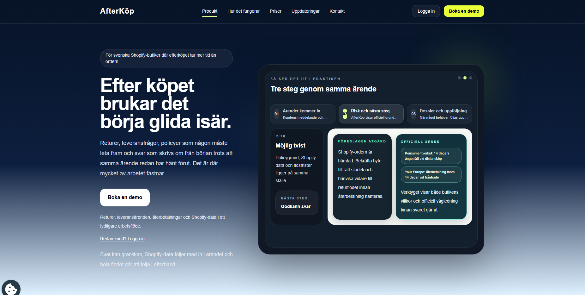
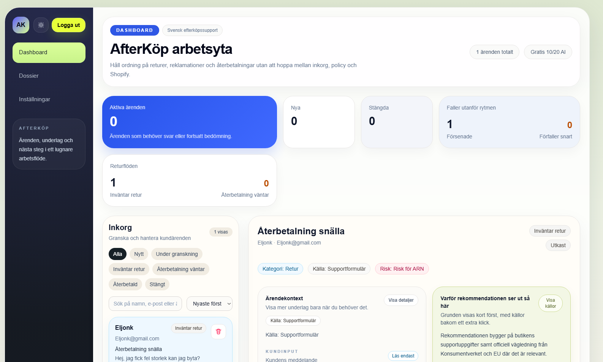
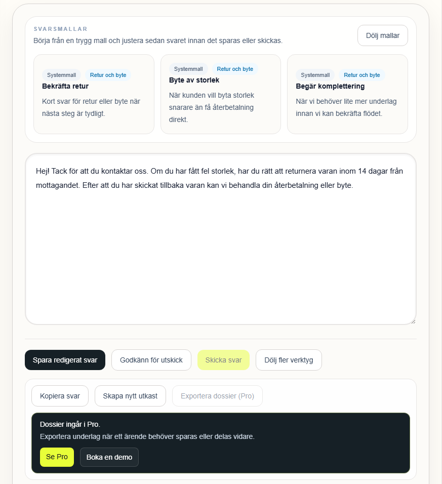
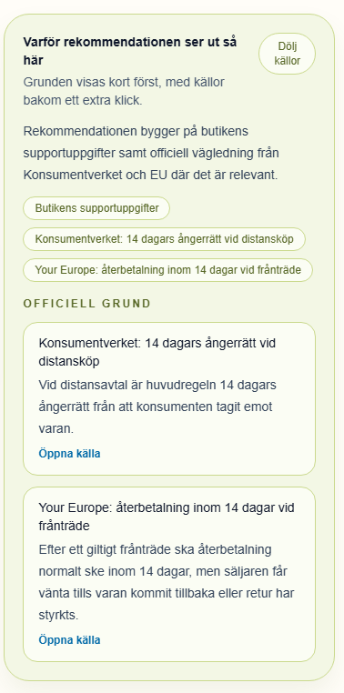
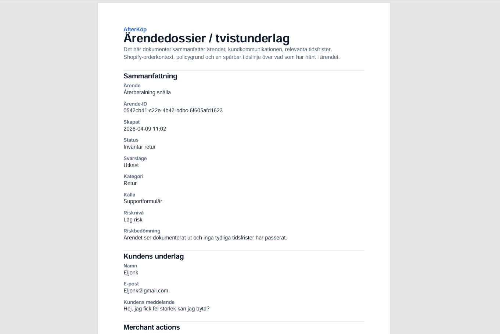
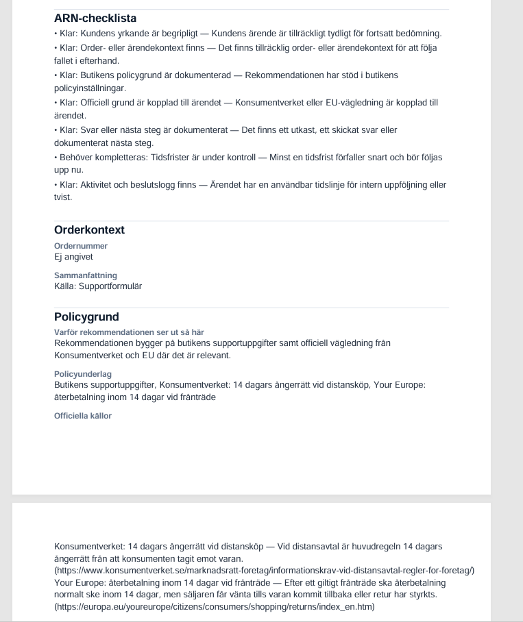

Repetitive support work
The same questions come back again and again, but the reply still often starts from a blank page.
Designing a calmer post-purchase workflow for Swedish Shopify stores
AfterKöp is a SaaS tool I built for Swedish Shopify stores that need a better way to handle returns, refunds, and support cases after the purchase. I started it because post-purchase work is often much messier than it should be, especially for smaller merchants.
Instead of jumping between inboxes, Shopify, store policies, and internal notes, the merchant gets the full case in one place. The goal was simple: make support feel less scattered and make decisions easier to trust.
View live product
For many smaller Shopify stores, the real mess starts after checkout. A return request might arrive through a support form, a refund question through email, and the order details live somewhere else entirely. Even simple cases can take too long because someone first has to piece the situation together.
The same questions come back again and again, but the reply still often starts from a blank page.
To answer one case properly, you often have to check the inbox, the order, the store policy, and the case history in different places.
When things get rushed, it becomes easier to miss deadlines, misread consumer rights, or send something that creates more trouble later.
I designed AfterKöp around the case itself rather than around a generic inbox. Once a store is connected to Shopify, the system pulls in the customer's message, relevant order data, category, status, and the likely next step.
That makes the workflow much clearer: understand the case, review the recommendation, edit or approve the reply, and keep a record of what happened. I wanted the product to speed things up without turning the reasoning into a black box.

One of the key features is AI-assisted reply drafting. I never wanted this to be about blindly sending automated answers. The point was to give the merchant a strong first draft based on the actual case instead of dropping them into an empty text field.
The draft is built from the customer's message, the case type, the order context, and the policy basis already attached to the case. From there, the merchant can edit it, save it, approve it, or keep working before anything goes out.

A big part of the product is that it shows why a recommendation exists, not just what the answer should be. The case view surfaces policy basis, store-specific support rules, and the official sources behind the recommendation.
That matters in Swedish e-commerce, where returns and refunds are not just support tasks, but legal ones too. If the system is going to help write replies, the merchant needs to be able to see the reasoning and stand behind it.


AfterKöp can also export a PDF dossier for each case. It pulls together the summary, customer and order context, the basis for the recommendation, and a timeline of what happened.
That makes the case easier to revisit, share internally, or use if something escalates later. For me, this was important because it made the product useful beyond just drafting replies in the moment.

The product is hosted on Vercel, and Supabase handles login, account state, and tier logic like free versus pro. Shopify is connected directly so stores can pull in case and order context instead of entering everything by hand.
I also set up Google Tag Manager and Google Analytics 4 to track how people move through the product. That helps me see where onboarding, case handling, or decision points still need work.
What I like about this project is that it sits right between product design and real operations. It is not just about making support look cleaner. It is about helping stores move faster while still keeping context, documentation, and compliance intact.
The next step is to add stronger product outcomes, usage numbers, and launch learnings. That would show not only how the tool works, but what changes when people use it.
I'm interested in building products where clarity, operations, and trust all have to work together in the real world.
Press Escape to close or click outside the image.